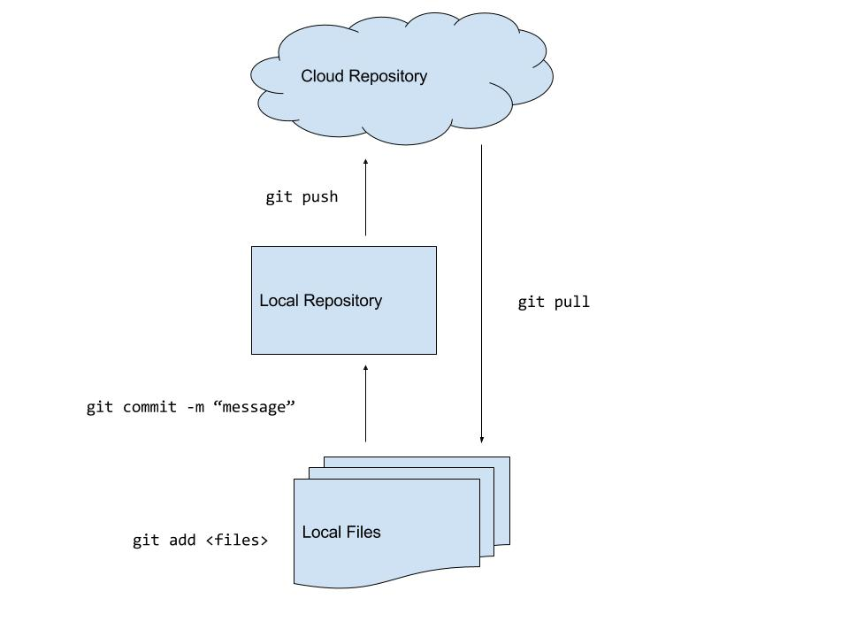
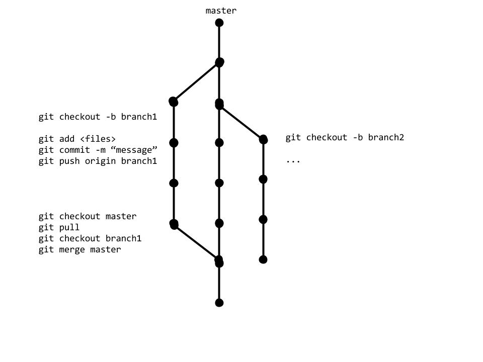
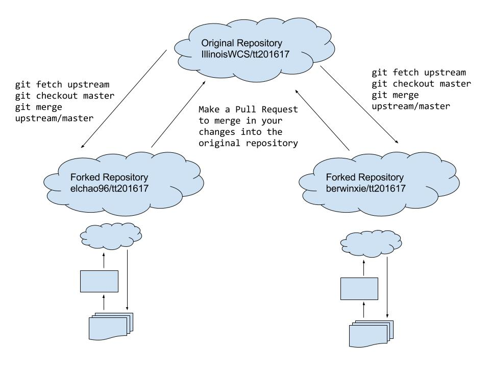

Git/Github
Emily Chao(elchao2), Berwin Xie(bxie6)
Prerequisites: Installing Git
OSX
- Open Terminal.
xcode-select --install- Confirm installation by typing
which git. There should be a file path instead of a not found error.
- See here for troubleshooting.
Windows
- Download Git from https://git-scm.com/download/win.
- Follow the instructions for the installer.
- You should now have a Git Bash terminal application installed.
- See here for troubleshooting.
Linux
- Install Git using your favorite package manager for your specific Linux distro.
- Open a terminal.
- Ex. Fedora-like systems
sudo yum install git-all.
- Ex. Ubuntu/Debian systems
sudo apt-get install git-all.
- Confirm installation by typing
which git. You should see a file path instead of a not found error.
- See here for troubleshooting.
What is a Version Control System?
- Collaboration tool for computer scientists
- Records changes to files in a designated directory - snapshot
- Minimizes conflict between collaborators on the same file
- Allows for reverting to previous revisions of files
What is Git?
- One of the most popular version control systems used today
- Designed by Linus Torvalds, the creator of the Linux kernel
- Supports branching and merging
- Allows you to save code in a repository
- Similar tools: SVN, Mercurial, Perforce, Piper
What is Github?
- A company that allows you to store git repositories in the cloud
- Widely used by the open-source software community
- Collaboration tools - issue tracking, project wiki, forking/pull requests
- Can host static websites using a git repository - Github Pages
How to use Git/Github?
- Github's own desktop client for your operating system
- Downloading git and using a terminal
A typical Git workflow for an individual

One Git workflow for teams

Another Git workflow for teams

- Go to the IllinoisWCS Github org and fork the git-skeleton repository.
- Clone your forked version.
- Add your name to the README.md file.
- Add, commit and push this change to your forked repository.
- Make a pull request.